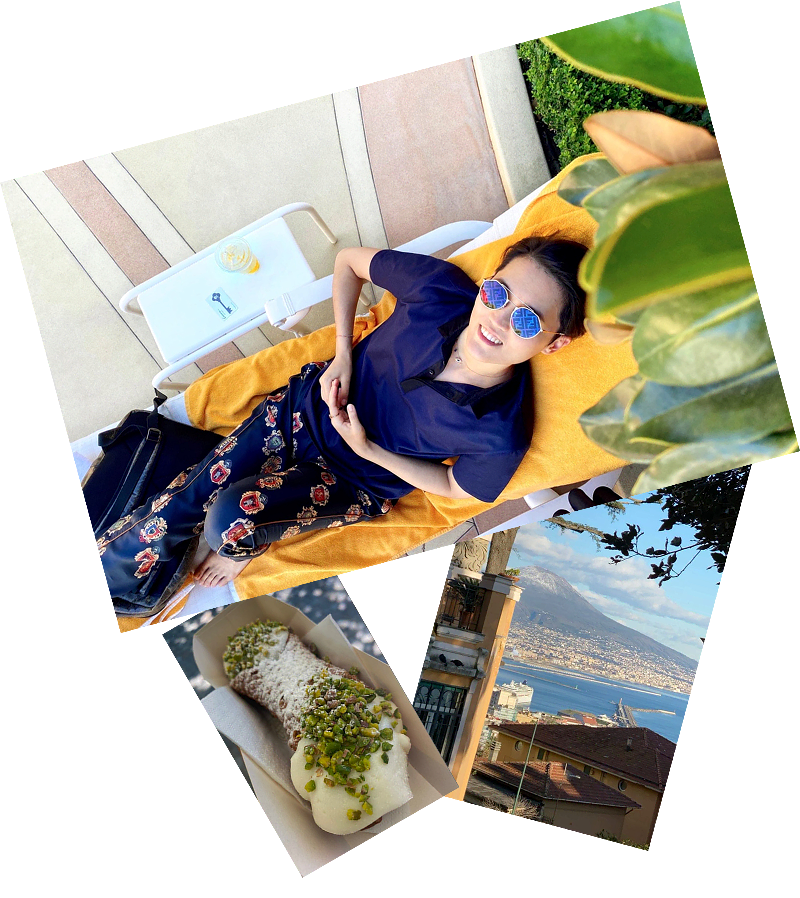
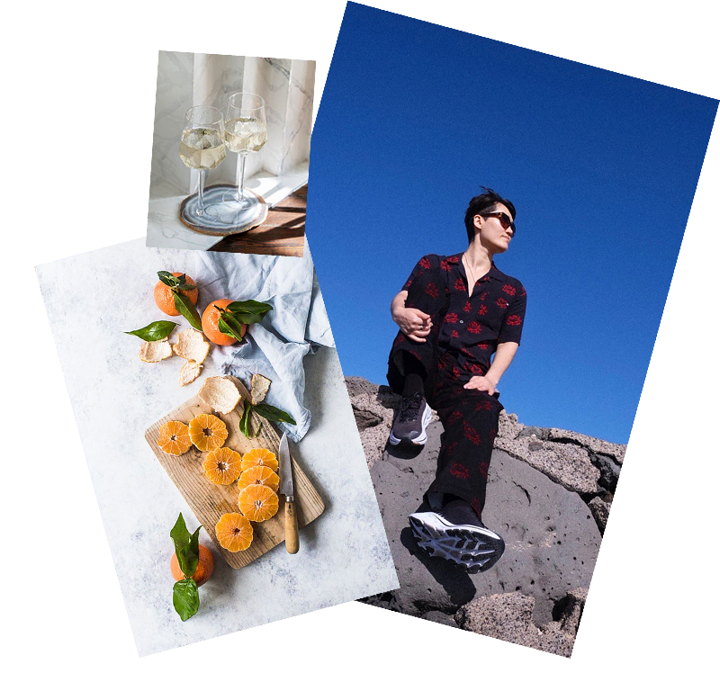

Это видео-роман.
Когда хотите, вы читаете его, как книгу,
хотите — смотрите, как сериал.
1,450₽
10,000 тенге
оплатить в другой валюте1930-ые.
“Сын связался с главой Ирландской
мафии? С отцом они ругаются как псы на привязи! А на его
студенческих вечеринках он не отказался от наркотиков?!”
Наследника богатейшей семьи Европы мать на лето забирает в Италию.
Сын отучился всего год в
Кембридже, а на полке матери уже трижды прибавились
успокоительные.
Он безумно умён, хлёсток на язык и давно ушёл из-под вашего контроля.
Нет, это точка. На всё лето этот молодой человек будет рядом с тобой.
Июль. Неаполь. Сезон охоты невест. Вы знаете, что ваш сын — возмутитель спокойствия.
Нет, общение с мафией он не прекратил.
Наоборот, скоро ему понадобились знания, как заморозить пальцы,
чтобы смочь пришить их
другому человеку, или как безопасно для репутации укрыть крайне
странный кейс похищения.
Как читать:
На электронной
читалке
Шелестеть
страницами
Смотреть видео-
спектакль
Как читать:
На электронной
читалке
Шелестеть
страницами
Смотреть видео-
спектакль
1930-ые.
“Сын связался с главой Ирландской мафии? С отцом они ругаются как
псы на привязи! А на его
студенческих вечеринках он не отказался от наркотиков?!”
Наследника богатейшей семьи Европы мать на лето забирает в Италию.
Сын отучился всего
год в Кембридже, а на полке матери уже трижды прибавились
успокоительные.
Он безумно умён, хлёсток на язык и давно ушёл из-под вашего контроля.
Нет, это точка. На всё лето этот молодой человек будет рядом с тобой.
Июль. Неаполь. Сезон охоты невест. Вы знаете, что ваш сын — возмутитель спокойствия.
Нет, общение с мафией он не прекратил.
Наоборот, скоро ему понадобились знания, как заморозить пальцы,
чтобы смочь пришить их
другому человеку, или как безопасно для репутации укрыть крайне
странный кейс похищения.
После нескольких глав, ты не можешь поверить, как простые
буквы, сложенные в слова, генерируют
в мозге столько эндорфинов.
В сюжете:
любовный треугольник,
гангстеры, роскошь,
остроумие и философия.
Берите своё самое яркое событие года.

Вы получите
◆ Электронную книгу “О летучих змеях. Неаполь”.
◆ Видео-роман. Автор романа
— талантливый актёр, и он отыгрывает
сцены так, что у вас стойкое ощущение
— “Я нахожусь в одном
пространстве с героем, вижу его мимику, слышу интонации, чувствую
его
эмоции”.
Вы можете смотреть главы, как серии сериала.
◆ Чат читателей: обсуждение
сцен,
героев, смысла книги.
Возможность взглянуть на события с разных углов.
◆ Психологические разборы
глав: возможность занырнуть в головы героев. Научиться у них
мыслить чётче,
понимать себя лучше, действовать
искреннее и смелее.

◆ Психологические подкасты, где
на примерах из книги
раскрываются разные механизмы психики. Например —
стеснительность, нелюбовь к своему внешнему виду,
неспособность доводить важные дела до конца, и
многое другое.
Берите себе “Неаполь”.
Это актёрская читка романа от самого автора, Франца Вертфоллена.
Включайте видео — ловите интонации героев, их характер и мимику.
После покупки, вы попадаете на канал,
где вам открывается доступ
к роману в формате видео.
Смотрите и слушайте их в любое удобное время.
Видео-роман — наслаждение актёрской игрой.
Камера: перед ней всего один человек, передающий историю.
Но после сцен у вас ощущение, что вы побывали в Неаполе.
Были на приеме у Неаполетанской принцессы, участвовали в перестрелке
с
сицилийскими гангстерами и пробовали канноли.
Но декорации вокруг делает не постановщик, а ваше собственное
воображение.
Оно оживает и через несколько сцен поражается: “вот оказывается как
я могу…”